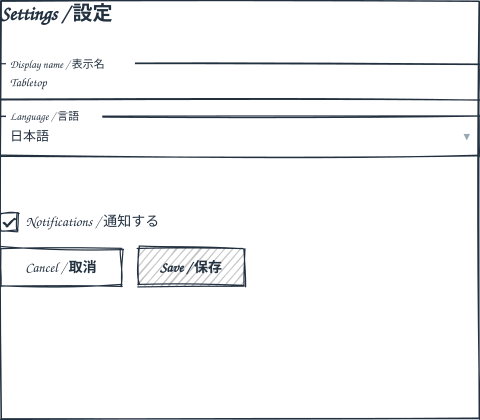
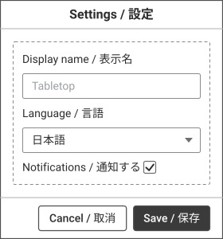
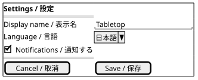

Wiremark 0.2.0
標準Sketch／480×420

手描きの線と埋め込みComic Neue。日本語は環境の代替フォント。
Wireloom 0.7.0
標準描画／280×300

直線的な部品とUIフォント。今回のClean描画の有力な比較対象。
PlantUML Salt 1.2026.1
標準描画／332×134

表形式の密な配置。素朴な設定画面や項目の相談向け。
表示名・言語・通知・取消・保存。各ライブラリーの標準レイアウトを使用し、外側の比較枠だけを統一しています。
標準Sketch／480×420

手描きの線と埋め込みComic Neue。日本語は環境の代替フォント。
標準描画／280×300

直線的な部品とUIフォント。今回のClean描画の有力な比較対象。
標準描画／332×134

表形式の密な配置。素朴な設定画面や項目の相談向け。
2026-11-21｜比較用の静的SVG。Tabletopへの機能実装は行っていません。表示倍率は各画像を同じ幅へ合わせています。